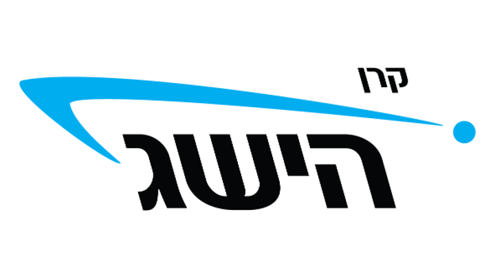
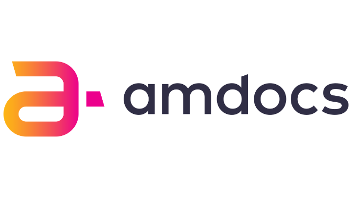
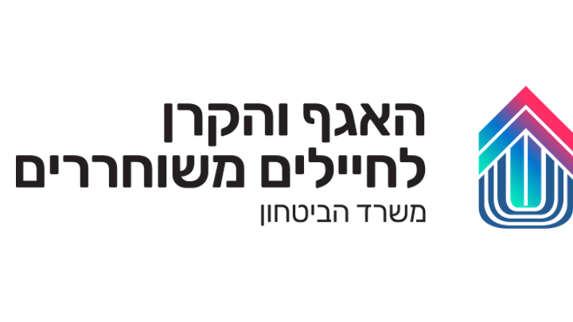
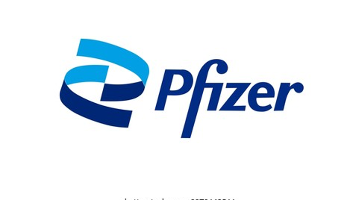
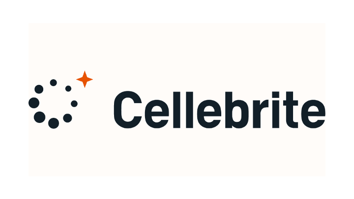
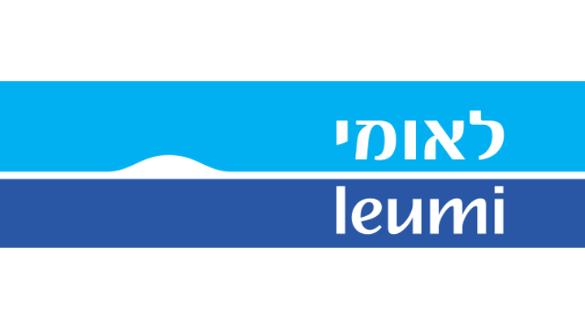
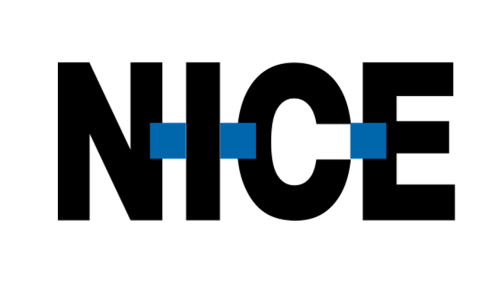
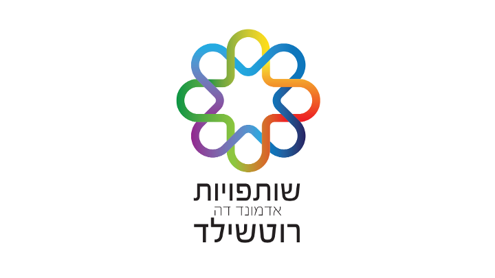

תהליך אישי מונחה AI שעוזר לך לזהות את המוטיבציות, הצרכים והחוזקות הייחודיות שלך - ולהגיע למקום הנכון בעבודה.
עובדים איתנו








שלושה שלבים פשוטים שייקחו אותך מחוסר בהירות לכיוון ברור
שיחה או הרצאה קצרה שמכינה אותך לתהליך, מסבירה מה צפוי ומתאמת ציפיות.
עבודה אישית עם דנה, המנחה הדיגיטלית מבוססת AI, שעוזרת לך לזהות את הDNA התעסוקתי שלך - המוטיבציות, הצרכים והחוזקות הייחודיות שלך.
שיחה אישית עם מנחת מקדמיה שמחברת את התובנות למציאות שלך, עוזרת לדייק כיוון ומייצרת צעדים קדימה.
שיטה ייחודית שבוצעה בהצלחה עם יותר מ-11,000 עובדים, מנהלים ומחפשי עבודה - עכשיו זמינה לך בגרסה דיגיטלית מונחית AI.
כלים ותובנות שיעזרו לך לקבל החלטות תעסוקתיות מדויקות
זיהוי מעמיק של המוטיבציות, הצרכים והחוזקות הייחודיות שלך בעולם העבודה.
התאמה בין מי שאתה לבין הסביבה המקצועית שתוציא ממך את המיטב.
צעדים קונקרטיים להמשך הדרך, מבוססים על התובנות שגילית בתהליך.
פרסונה מבוססת AI שמלווה אותך לאורך כל התהליך בשיח מעמיק ואישי.
הפיכת רצונות ויכולות לכלי עבודה בקבלת החלטות תעסוקתיות, מקטנות ועד גדולות.
מפגש אישי עם מנחה מנוסה שמחברת את התובנות הדיגיטליות למציאות שלך.
אנשים שכבר גילו את הDNA התעסוקתי שלהם
"התהליך עם דנה היה מדהים. בפעם הראשונה הרגשתי שמישהו באמת מבין מה אני צריכה מהעבודה. התוצרים שקיבלתי עזרו לי לקבל את ההחלטה הנכונה."
"לא חשבתי שאפשר לדייק ככה את מה שאני מחפש. הDNA התעסוקתי שלי הפך לכלי שאני משתמש בו בכל צומת קריירה. ממליץ בחום."
"השיחה עם המנחה אחרי הצ'אט עם דנה חיברה לי את כל הנקודות. יצאתי עם תוכנית פעולה ברורה ותחושת ביטחון שלא הכרתי."
"אחרי שנים של תחושה שאני לא במקום הנכון, התהליך הזה עזר לי להבין למה. עכשיו אני יודע בדיוק מה לחפש ומה חשוב לי באמת."
"דנה שאלה שאלות שאף אחד לא שאל אותי קודם. זה פתח לי צוהר לדברים שידעתי על עצמי אבל לא ידעתי לנסח. ממליצה לכל מי שמחפש בהירות."
"עשיתי את התהליך בזמן שהייתי מרוצה מהעבודה, וזה עזר לי לדייק את ההתפתחות שלי בתוך הארגון. לא חייבים להיות במשבר כדי להפיק ערך."
הצ'אט עם דנה לוקח לרוב בין שעה לארבע שעות, תלוי משתמש. מרבית המשתמשים נהנים מאוד מהתהליך ורוצים למצות אותו עד תום כדי לדייק את התוצרים ואת התובנות, אבל זה כמובן תלוי בכם. השיחה עם המנחה היא כשעה ורבע.
כן, בוודאי. הצוות של Workfully.ai זמין לסייע לכם ולענות על כל שאלה.
לעומת פתרונות דיגיטליים אחרים, Workfully.ai היא לא עוד שאלון שנותן תשובות גנריות. התהליך בנוי על בסיס שיטה ייחודית שבוצעה פרונטלית עם יותר מ-11,000 עובדים ומנהלים, שמאפשרת שיח מעמיק ופרסונלי כדי להגיע לתוצרים המדויקים ביותר לך. התהליך מאפשר להפוך את הרצונות, היכולות והצרכים שלך לכלי עבודה בקבלת החלטות תעסוקתיות, מקטנות ועד גדולות.
התהליך תמיד רלוונטי. הDNA התעסוקתי הייחודי שלך יכול לשמש גם בצמתים כדי לבחור את הצעד הבא המדויק ביותר לך, או במקום קיים - כדי לדייק את ההתפתחות האישית בתפקיד הנוכחי ובארגון בו נמצאים, להנות יותר מהעשייה ולהצטיין בה.
המידע שלכם משמש רק כדי לחלץ ולהגדיר את הDNA התעסוקתי שלכם ועל מנת לבחון לאורו את צעדי ההמשך שלכם. אנו מחויבים לשמירה על הפרטיות שלכם.
בסוף התהליך יוצאים עם הDNA התעסוקתי האישי שלך, שייחודי רק לך, ועם הצעות קונקרטיות להמשך הדרך המבוססות עליו.
התחילו את התהליך היום ותגיעו למקום הנכון בעבודה.
אני רוצה להתחיל